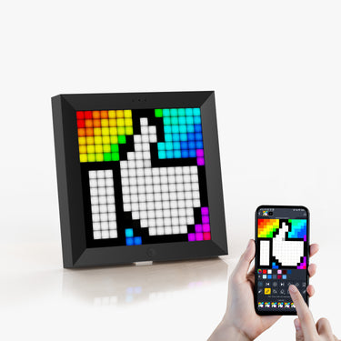
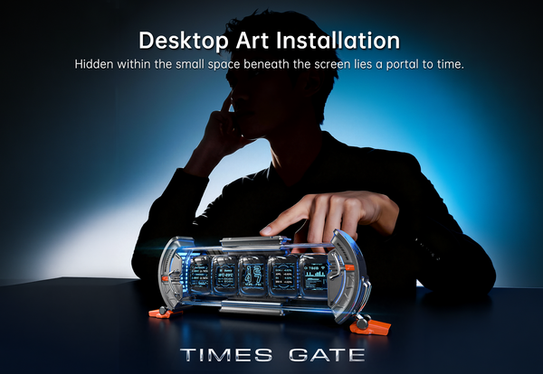

我把一块 16×16 的像素屏摆上桌面，用了一周后说点真话
刷桌搭视频被种草 Divoom，从开箱配对踩坑到五屏组合玩出花——这玩意儿到底是智商税还是真能提升桌面幸福感
为什么我会去碰一个像素屏
说起来惭愧，我是被短视频里的"桌搭改造"内容种草的。刷到别人的桌面上摆着一块小屏幕，显示着时钟、天气、还有会动的像素艺术，那种复古电子感一下子戳中了我。加上那段时间正好在折腾加密货币，看到有人用它实时显示 BTC 价格——这不就是我想要的桌面小仪表盘吗？
然后我就去搜了 Divoom，去它的官网上看了一圈。说实话之前对这个品牌完全陌生，只知道它做像素风的智能硬件，产品线挺杂的：有小到 16×16 点阵的 Pixoo，有带蓝牙音箱的 Timebox-Evo，还有一个叫 Times Gate 的五屏怪物。犹豫了好一阵，最后本着"先试试水"的心态，入了一台 Pixoo-16 和一台 Timebox-Evo 音箱。
开箱第一眼和配对踩坑
Pixoo-16 比我想象的还要小，差不多就是个烟灰缸的底面积，但拿在手里质感不错，外壳是磨砂黑，点阵 LED 灯珠均匀不刺眼。Timebox-Evo 则是个方正的小方块，前面一整块像素屏，顶部是音箱出音孔，两侧还有 RGB 灯条——摆桌面上确实好看。
但配对这一步，我差点以为自己买了个坏的。
先连 Timebox-Evo 音箱。我按常规操作打开手机蓝牙设置，找到 "Timebox-Evo Speaker" 点了连接，手机显示已配对，放音乐也正常出声。但当我打开 Divoom APP 想给屏幕推送个像素画的时候，APP 死活找不到设备。屏幕上就停在默认的时钟面，怎么点 APP 里的控件都没反应。
我折腾了快半小时，重启手机、重装 APP、甚至差点恢复出厂设置——后来去Divoom文档翻了一下才弄明白，这玩意儿要配两个蓝牙通道：音频通道在手机系统蓝牙里配（管声音），屏幕通道要在 Divoom APP 里配（管像素屏）。我之前只配了一半，等于只让它"能说话"但"看不见"。
长按音箱上的 TWS 键让它重新进入配对模式，然后在 APP 的扫描列表里找到带 "Light" 后缀的那个名字，点一下就通了。通了之后屏幕立刻从时钟面切成了我 APP 里选好的像素动画——说实话那一刻还是有点爽的。
Pixoo-16 是 Wi-Fi 设备，配对反而顺利，插电、APP 扫描、输 Wi-Fi 密码，一分钟搞定。但要注意它只认 2.4GHz 频段，我家路由器默认开了 5G，还特意去路由器后台把 2.4G 打开了。

实际用了一周，挑三个最有感触的点
第一点：像素屏不只是"好看"，它真的能当信息面板用
我之前以为这东西就是个桌面装饰物，摆几天新鲜感过了就吃灰。但实际用下来，Pixoo-16 上跑的几个 Widget 我是真的每天都在看。
最常用的是加密货币价格——我设了 BTC 和 ETH 的实时价格，每 30 秒刷新一次。之前看价格要掏手机、解锁、打开交易所 APP，现在抬头瞄一眼桌面就知道了。16×16 的点阵能显示的字数有限，但比特币价格的数字刚好能塞下，涨跌还能用绿色和红色区分，够用了。
然后是番茄钟。Pixoo-16 屏幕小，显示不了太复杂的东西，但番茄钟正好——一个大数字倒计时，到点闪一下提示该休息了。我把它和手机日历做了联动，会议期间自动暂停番茄钟，会议结束后继续循环。这个联动是真的被低估了，之前用手机上的番茄钟 APP，通知弹出来很容易被我忽略；但 Pixoo 就在视线里，屏幕闪一下我很难不注意到。
还有一个我没想到会用这么多的：倒计时。我设了一个"距离周末还有 X 天"的倒计时，每天早上坐到办公桌前看到它，莫名就有种"快熬出头了"的动力——有点傻，但确实有用。
第二点：Timebox-Evo 的音箱音质，比我预期的好
老实说，买 Timebox-Evo 的时候我主要是冲着它的像素屏去的，音箱功能纯属附赠。但听了几天下来，音质竟然还不错——低频有下潜，人声也不闷，日常听听播客、背景音乐完全够用。蓝牙连接稳定，没出现过断连。
而且当你在放音乐的时候，像素屏会自动切成音乐可视化模式，跟着节奏跳动的像素动画——这个细节真的加分，感觉音箱"活"了起来。我有时候下班在家放着音乐，就盯着那块小屏幕看它跳，能看个好几分钟。
第三点：Times Gate 五屏组合，是我目前最想要但还没下手的
写这篇文章的时候我去翻了官方的一些玩法案例，Times Gate 那个五屏组合真的把我种草得不行。它是五块独立的 LCD 屏幕拼在一起，每块屏可以单独配不同的 Widget，互相不影响。有人把它做成加密货币交易面板：一块 BTC、一块 ETH、一块大盘指数、一块新闻标题、一块 BTC Logo 的像素动画；也有内容创作者用来显示 YouTube 订阅数、Twitch 粉丝数、直播倒计时。
我现在的桌面已经有 Pixoo-16 了，但那块屏幕太小，只能显示一个 Widget。Times Gate 五屏铺开的话，等于把我现在想看的所有信息同时摆在眼前——想想都爽。不过它必须插电用，而且价格也比 Pixoo 贵不少，我还在纠结要不要入。

说说那些不太完美的地方
配对要分两路蓝牙是真的反人类，新手上手大概率会踩这个坑。APP 我是从官方下载的，界面设计也有点乱，Widget 库、像素画社区、设备设置散在不同的 tab 里，找东西要翻半天。而且有时候 APP 扫描设备会卡住，我大概遇到过三四次，关掉 APP 强制结束进程再打开就好了，但体验上总归是不爽的。
还有，Wi-Fi 设备只支持 2.4GHz 这件事，放在 2026 年真的有点说不过去。我家路由器 5G 是默认开启的，2.4G 反而要手动开才能用，这个门槛对小白用户不太友好。
适合谁，不适合谁
如果你跟我一样是桌搭爱好者，喜欢那种复古电子感、想给桌面加点动态元素——Divoom 值得一试。Pixoo-16 价格不贵，入门门槛低；Timebox-Evo 兼顾了音箱和像素屏，性价比挺高；Times Gate 和 Times Frame 适合预算充足、想玩组合玩法的玩家。
如果你对像素风完全无感、桌面追求极简干净，或者觉得花几百块买一块"只能显示文字和简单图形"的屏幕纯属浪费——那这东西大概率会变成你的智商税，不如省下钱买个好点的显示器支架。
还有一种情况：如果你已经有 Apple Watch 或者智能手表了，手表上其实就能看时间、倒计时、日历提醒——那 Pixoo 能做的大部分事情，你的手表也能做。但手表需要抬手看，Pixoo 就在你视线正前方，不用抬手——这个"不用抬手"的差别，用起来才知道。
最后说句掏心窝的
我之前一直觉得桌面数码配件大多是"为了好看而好看"，新鲜感过了就闲置。但 Divoom 这玩意儿让我改观了——它不是纯装饰，它真的在帮我减少掏手机的次数。价格嘛，入门款 Pixoo-16 也就一顿火锅钱，试试不亏。
现在那两块小屏幕就在我办公桌的一角，BTC 价格在跳、番茄钟在倒计时、音箱里放着播客。说实话我挺喜欢这个画面的，对了这套资料在三个仓库都有备份——GitHub、Gitee和GitCode，哪个顺手用哪个。